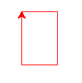

Un programa pas a pas¶
Encara que tot plegat pugui semblar confós, no et deixis superar pel soroll. Els conceptes que estem treballant continuen sent molt simples: instruccions seqüencials que permeten assignar valors a variables.
Construïm un programa senzillet, va.
Ho farem molt pas a pas i, per aquesta raó, semblarà més complex del que és. Les tècniques que aplicarem durant la seva construcció, però, ens oferiran una bona guia per a fer programes més complexos.
Et recomano que, en una primera lectura només llegeixis i intentis entendre el màxim de la següent descripció. Després tindràs l’oportunitat de realitzar les passes.
El programa que saluda¶
Considerem que volem construir un programa que demani als usuaris el seu nom i, tot seguit, el saludi amablement.
Comencem per la part més important: el comentari de capçalera!
1 | # Programa que demana a l'usuari el seu nom i li saluda pel seu nom
|
Un cop hem escrit el comentari que descriu què fa el nostre programa, pensem com serà executat. Com l’enunciat no ho especifica, posarem els detalls que ens falten nosaltres mateixos. Per exemple, l’execució podria ser quelcom similar a:
1 2 3 4 | $ python3 saludausuari.py
Com et dius?
Manel
Hola Manel. M'encanta saber de tu
|
Amb la línia 1 hem establert el nom del fitxer que contindrà el nostre
programa. Tot i que podem posar-li qualsevol, saludausuari.py sembla
prou descriptiu.
El contingut de la línia 3 correspon a l’entrada que escriuria un usuari (entrada estàndard). Les línies 2 i 4, en canvi, les escriurà el nostre programa (sortida estàndard).
D’aquesta manera, hem pres algunes decisions importants. En concret, ja tenim els missatges concrets i la manera d’interactuar amb l’usuari.
Afegim l’exemple al nostre codi:
1 2 3 4 5 6 7 8 | # Programa que demana a l'usuari el seu nom i li saluda pel seu nom
#
# Exemple d'execució:
#
# $ python3 saludausuari.py
# Com et dius?
# Manel
# Hola Manel. M'encanta saber de tu
|
Ara que ja tenim clar què és el que hem de fer, pensem com. És a dir, quines passes ens portaran a aconseguir el nostre objectiu.
primer, sembla que hem d’obtenir el nom de l’usuari, oi?
un cop el tinguem, haurem de construir el missatge de salutació
finalment, haurem de mostrar-li aquest missatge a l’usuari
Doncs vinga, a comentar el nostre codi:
1 2 3 4 5 6 7 8 9 10 11 12 13 14 | # Programa que demana a l'usuari el seu nom i li saluda pel seu nom
#
# Exemple d'execució:
#
# $ python3 saludausuari.py
# Com et dius?
# Manel
# Hola Manel. M'encanta saber de tu
# XXX obtenir nom
# XXX composar el missatge
# XXX mostrar missatge
|
Fixa’t que hem posat XXX davant dels comentaris que expressen les
passes que hem de realitzar. Aquestes tres X juntes solen indicar que hi
ha alguna cosa pendent a fer.
El nostre programa continua creixent (14 línies!) i encara no fa res. A sobre, ara s’ha convertit en tres problemes a resoldre en comptes d’un!
En el seu favor, direm que cadascun dels tres subproblemes és més fàcil que el problema principal i, en resoldre tots tres, tenim resolt el principal! D’això s’en diu dividir i vèncer.
Ara ens centrem en el primer subproblema. Hem de demanar-li el nom a l’usuari. Per fer-ho, ens caldrà primer explicitar-li què volem i després recollir la seva resposta.
1 2 3 4 5 6 7 8 9 10 11 12 13 14 15 16 17 18 | # Programa que demana a l'usuari el seu nom i li saluda pel seu nom
#
# Exemple d'execució:
#
# $ python3 saludausuari.py
# Com et dius?
# Manel
# Hola Manel. M'encanta saber de tu
# XXX obtenir nom
# - XXX demanar nom
# - XXX obtenir resposta
# XXX composar el missatge
# XXX mostrar missatge
|
Tenim ara dos nous subproblemes. El primer és demanar el nom a l’usuari. Pero aquest problema és molt senzill de resoldre. En tenim prou amb la instrucció:
print("Com et dius?")
Doncs vinga, col·loquem la nostra primera instrucció a
saludausuari.py!
1 2 3 4 5 6 7 8 9 10 11 12 13 14 15 16 17 18 19 | # Programa que demana a l'usuari el seu nom i li saluda pel seu nom
#
# Exemple d'execució:
#
# $ python3 saludausuari.py
# Com et dius?
# Manel
# Hola Manel. M'encanta saber de tu
# XXX obtenir nom
# - XXX demanar nom
print("Com et dius?")
# - XXX obtenir resposta
# XXX composar el missatge
# XXX mostrar missatge
|
Ara ja tenim quelcom executable. Per comprovar que no hem trencat res, podem executar el nostre incipient programa:
1 2 | $ python3 saludausuari.py
Com et dius?
|
L’execució s’acaba aquí. És clar, no hem programat res més. Però ens dóna confiança de que anem bé!
Eliminem el comentari de la línia 12 doncs el codi ja és evident, i continuem pel següent subproblema:
1 2 3 4 5 6 7 8 9 10 11 12 13 14 15 16 17 18 | # Programa que demana a l'usuari el seu nom i li saluda pel seu nom
#
# Exemple d'execució:
#
# $ python3 saludausuari.py
# Com et dius?
# Manel
# Hola Manel. M'encanta saber de tu
# XXX obtenir nom
print("Com et dius?")
# - XXX obtenir resposta
# XXX composar el missatge
# XXX mostrar missatge
|
El nou problema a resoldre consisteix en recollir el que l’usuari ens
respongui. Com que ho farà per l’entrada estàndard, el que hem de fer
servir és input(). Hem de deixar el seu resultat en alguna variable.
Com que el que ha de contenir és el nom de l’usuari i no sembla que haguem
de tracter altres moms, podríem anomenar-la simplement nom.
La instrucció resultant seria, simplement:
nom = input()
Incorporem la nova instrucció al nostre programa:
1 2 3 4 5 6 7 8 9 10 11 12 13 14 15 16 17 18 19 | # Programa que demana a l'usuari el seu nom i li saluda pel seu nom
#
# Exemple d'execució:
#
# $ python3 saludausuari.py
# Com et dius?
# Manel
# Hola Manel. M'encanta saber de tu
# XXX obtenir nom
print("Com et dius?")
# - XXX obtenir resposta
nom = input()
# XXX composar el missatge
# XXX mostrar missatge
|
Executem novament el nostre codi:
1 2 3 | $ python3 saludausuari.py
Com et dius?
Manel
|
Aquest cop, en escriure Com et dius? es queda esperant. Quan li
introduïm el nom, però, no fa res! Bé, clar, encara no li hem dit què n’ha
de fer amb el nom.
El que sí està clar és que ja hem completat el problema de recollir la resposta i, també, el problema més gros d’obtenir el nom. Fem neteja de comentaris innecessaris abans de continuar.
1 2 3 4 5 6 7 8 9 10 11 12 13 14 15 | # Programa que demana a l'usuari el seu nom i li saluda pel seu nom
#
# Exemple d'execució:
#
# $ python3 saludausuari.py
# Com et dius?
# Manel
# Hola Manel. M'encanta saber de tu
print("Com et dius?")
nom = input()
# XXX composar el missatge
# XXX mostrar missatge
|
El nostre programa està agafant forma, oi?
Passem ara al següent objectiu i composem el missatge. Per fer-ho, sabem que haurem de concatenar el nom que ens han introduït amb la resta del missatge. Una de les maneres que podem fer per construir el missatge seria:
"Hola " + nom + ". M'encanta saber de tu"
Si no estem segurs de si això farà el que volem, podem entrar en la consola de Python i comprovar-ho:
>>> nom = "Manel"
>>> "Hola " + nom + ". M'encanta saber de tu"
"Hola Manel. M'encanta saber de tu"
Fa bona pinta, oi?
El resultat l’haurem de col·locar en algun lloc, és a dir, en
una variable. Li podem dir per exemple missatge doncs és el que
contindrà, no? La instrucció resultant seria:
missatge = "Hola " + nom + ". M'encanta saber de tu"
Substituïm el comentari de la línia 13 per la nova instrucció al codi del programa:
1 2 3 4 5 6 7 8 9 10 11 12 13 14 15 | # Programa que demana a l'usuari el seu nom i li saluda pel seu nom
#
# Exemple d'execució:
#
# $ python3 saludausuari.py
# Com et dius?
# Manel
# Hola Manel. M'encanta saber de tu
print("Com et dius?")
nom = input()
missatge = "Hola " + nom + ". M'encanta saber de tu"
# XXX mostrar missatge
|
Podem executar-ho per comprovar que no hem trencat res, però no veurem més resposta, doncs encara no hem dir que s’ha de fer amb el missatge. Això és justament el que ens demana el darrer objectiu.
Però ja sabem com mostrar missatges de text per sortida estàndard, oi?
print(missatge)
Reemplacem el comentari de la línia 15 per aquesta instrucció i tenim el programa:
1 2 3 4 5 6 7 8 9 10 11 12 13 14 15 16 17 18 19 | # Programa que demana a l'usuari el seu nom i li saluda pel seu nom
#
# Exemple d'execució:
#
# $ python3 saludausuari.py
# Com et dius?
# Manel
# Hola Manel. M'encanta saber de tu
# Obtenció de l'entrada
print("Com et dius?")
nom = input()
# Composició del missatge
missatge = "Hola " + nom + ". M'encanta saber de tu"
# Mostra el resultat
print(missatge)
|
Executem el nostre programa:
1 2 3 4 | $ python3 saludausuari.py
Com et dius?
Manel
Hola Manel. M'encanta saber de tu
|
Bravo!
Recapitulem¶
Per construir el nostre programet, hem realitzat les següents passes:
Hem descrit en una capçalera què fa el nostre programa
Hem simulat una execució del nostre programa, amb el que
hem decidit el nom del fitxer
hem decidit els missatges concrets que generarem
hem decidit la manera concreta d’interaccionar amb l’usuari
Tot seguit, hem descomposat el nostre problema en tres subproblemes
Hem afegit les descripcions dels subproblemes com a comentaris dins del nostre codi. Els hem remarcat amb
XXX.A continuació hem anat resolent cada subproblema. Aquells que requereixen més d’una instrucció, els hem desglossat en subproblemes.
Quan ja hem tingut les instruccions corresponent, hem substituït el comentari
XXXper les instruccions.Hem executat sovint el codi resultant per comprovar que tot anava correctament.
Quan hem tingut dubtes del funcionament d’alguna part, l’hem provada en la consola de Python
Un cop finalitzat el nostre programa i comprovat que funciona, l’hem lliurat al nostre client i ens ha pagat. Bé, aquesta part no l’hem feta de moment. Tot arribarà.
Important
Els exercicis que venen a continuació et permetran pràcticar l’assignació i l’entrada/sortida. L’objectiu més important, però, no rau en que funcionin sinó en que practiquis la manera estructurada que t’estic proposant.
Molta gent es veu de seguida amb la capacitat de programar aquests exercicis sense pensar-hi gaire i se sent temptada a saltar-se la part de explícitar l’objectiu amb una capçalera, definir la simulació o de fer servir comentaris per indicar els subproblemes a resoldre. Et recomano molt que no caiguis en la trampa. Els problemes aniran esdevenint cada cop més complexos i començar amb bons hàbits amb problemes menys complexos pot donar-te molt d’avantatge.
Jo t’he avisat
Exercici 3. ☼ El programa que saluda (repassat)¶
Segurament mentre t’ho explicava a classe no has tingut temps de teclejar l’exercici d’exemple. És una bona pràctica escriure’l sencer des de zero.
Torna a rellegir la descripció de com desenvolupar el programa que saluda, aquest cop segueix les passes fins que el programa s’executi.
Exercici 4. Noms i cognoms¶
Desenvolupa un programa en el fitxer anomenat nom_i_cognoms.py dins d’una
carpeta anomenada 01_04_nomsicognoms/, que demani a
l’usuari el seu nom. Un cop obtingut, demanarà el seu cognom. Finalment
respondrà: "Ei «nom», tinc una amiga que també és «cognom»".
Per fer-ho, recorda les passes:
Defineix una capçalera
Simula una execució
Decomposa el programa en, com a mínim tres subproblemes: obtenció de l’entrada, càlcul i presentació dels resultats
Resol cada subproblema. Si cal, decomposa’ls encara més.
No oblidis actualitzar el teu repositori git (incloent la versió remota) amb
el nou exercici.
Exercici 5. Repetim una paraula¶
Desenvolupa un programa dins de la carpeta 01_05_repeteixparaula/ que demani
a l’usuari una paraula i un número, i escrigui la paraula tants cops com digui
el nombre.
La interacció podria ser similar al següent:
$ python3 paraularepetida.py
Diguem una paraula:
namaste
Diguem quants cops la vols:
5
namaste namaste namaste namaste namaste
Pistes
Com sempre, fes servir les passes habituals per resoldre’l
L’operador
*en Python permet multiplicar un text per un nombre i el resultat és que el text es repeteix tants cops com digui el nombre>>> "hola" * 3 holaholahola
La teva solució, perquè es separin les paraules, requerirà que aparegui un espai extra al final de cada repetició (incloent la darrera!)
Recorda que
input()retorna un valor de tipus string. Això et requerirà convertir-ho si et cal un número.
Exercici 6. ☼ Un rectangle a mida¶
Desenvolupa un programa a la carpeta 01_06_rectangleamida que demani a
l’usuària un color i la longitut dels dos costats d’un rectandle i, fent servir
la tortuga, el dibuixi.
La interacció pot ser similar a:
$ python3 rectandeamida.py
Color del rectangle:
red
Longitut del primer costat:
50
Longitut del segon costat:
75
A continuació, obrirà una finestra i dibuixarà el rectangle amb el color i els costats indicats,
El programa no és gaire diferent als que ja hem fet. Simplement et tocarà
demanar el valor per a tres variables i usar-les a l’hora de fer les peticions a
la tortuga. Per exemple, si hem guardat el valor del color a una variable
anomenada color, i la tortuga a la variable tortuga, podem demanar-li el
canvi de color amb:
tortuga.color(color)
Pistes:
Recorda que
input()et retorna sempre text i potser voldràs que sigui numèric. En aquests casos caldrà convertir amb la funcióint().En aquest exercici, la simulació descrita no serà igual que les anteriors. En concret la sortida haurà de ser descrita en llenguatge natural.